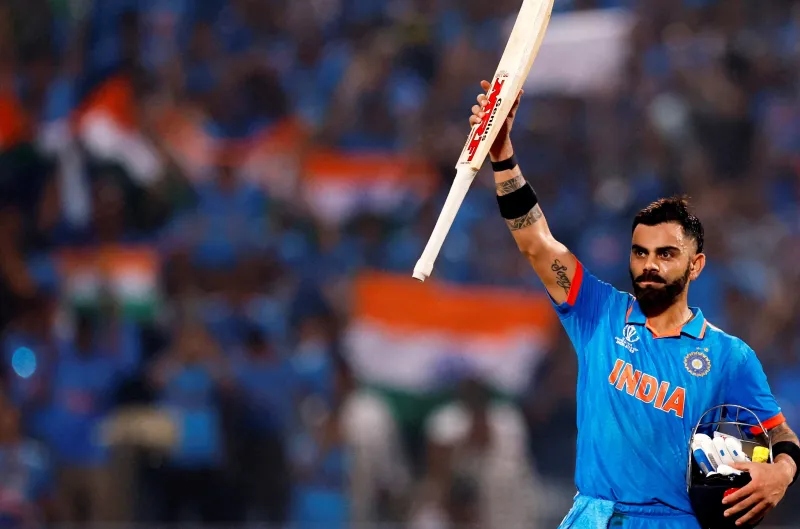

Why I Admire Virat Kohli
Virat Kohli is not just one of the finest cricketers in the world, but also a symbol of passion, leadership, and relentless commitment to excellence. His journey from a young boy in Delhi to becoming the captain of the Indian cricket team is an inspiring story of hard work, consistency, and self-belief.
Admirable Qualities
- Determination: Kohli's work ethic and fitness levels set a benchmark for athletes across sports.
- Leadership: He led India to many memorable victories with bold decisions and confidence.
- Passion: His emotional involvement in every match shows his love for the game and his country.
- Discipline: A strict fitness routine and disciplined lifestyle have helped him maintain top form over the years.
- Inspiration: He motivates millions of young athletes to dream big and never give up.
From smashing centuries across all formats to being the backbone of Indian cricket, Virat Kohli continues to inspire both on and off the field. He’s not just admired for his batting but for the way he carries the hopes of a billion fans with courage and pride.
"Self-belief and hard work will always earn you success." – Virat Kohli